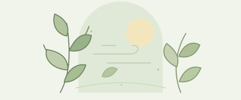
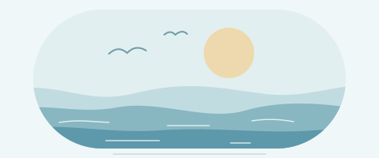
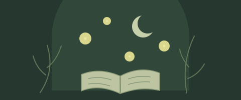

风经过的时候，日子也慢了下来
给自己一段不赶路的时间，听听树叶的声音。
01去绿意里待一会儿
一棵树的影子，一阵刚刚好的风，让熟悉的小路多了几分新鲜。不必特意寻找目的地，走一走就很好。
愿你总有片刻，能听见自己的节奏。
林间微风 / 海岸潮汐 / 星轨来信 / 萤火夜读 / 雨窗随笔 / 花瓣信笺
开场插画轻轻流动，正文安静阅读。选择喜欢的风格，在工作台的「文章排版模板 → 轻盈动效」应用。

给自己一段不赶路的时间，听听树叶的声音。
一棵树的影子，一阵刚刚好的风，让熟悉的小路多了几分新鲜。不必特意寻找目的地，走一走就很好。
愿你总有片刻，能听见自己的节奏。

海的节奏很慢，刚好可以等一等我们。
沿着海岸散步，看水纹把光线揉碎，再轻轻推到岸边。一来一回之间，心里也慢慢安静下来。
愿下一次出发，带着轻松的心情。
抬头看星空，也重新看看身边的问题。
我们不必一下理解整个宇宙。先追问眼前的现象，再沿着可靠的资料往前走，未知就会一点点变成新的认识。
愿好奇心，带你走向更远的地方。

给纷乱的一天，留一个柔软的结尾。
关掉不再需要的提醒，读几行文字。未必急着记住什么，只是让注意力回到此刻，让一天慢慢落下帷幕。
晚安，愿你今夜安然。

把喧闹留在窗外，把时间留给自己。
听雨滴落在窗边，看热气从杯口升起。打开一本读到一半的书，熟悉的句子，也许会有新的意味。
等雨停了，再去看看世界。
把没来得及说的话，收进这一页信笺。
有人在忙碌里问候，有人在低落时陪伴。生活未必时时圆满，却总有一些细小的瞬间，让我们愿意继续认真地过。
愿这封信，刚好落在你的好心情里。